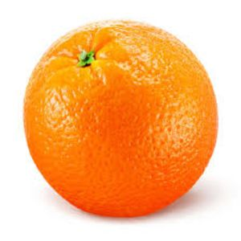

CS 194-26: Fall 2020
Project 2:
Fun with Filters & Frequencies!
Megan Lee
Part 1: Fun with Filters
In this part, we will build intuitions about 2D convolutions and filtering.
1.1: Finite Difference Operator
An image gradient is a directional change in the intensity or color in an image. Thus, in order to
detect the edges of our image, we can utilize the gradient of our image.
A useful tool to analyze the edges of our image is by using the derivatives of the image and the
gradient magnitude. We began this project by using the finite difference operators above and convolving
them with an image to obtain the partial derivative in x and y of our image.
In order to obtain the gradient magnitude image, we applied the formula above (sqrt(dx^2 + dy^2) to the partial
derivatives we previously found to view the overall image gradient.
Original ImagePartial Derivative in xPartial Derivative in yGradient MagnitudeBinarized Gradient Magnitude
I binarized the gradient magnitude image by picking the appropriate threshold,
attempting to suppresss the noise while still showing the edges. After playing around
with it, I ended up choosing a threshold of 45, which displayed clear edges but a
little noise at the bottom still.
1.2: Derivative of Gaussian (DoG) Filter
With just the difference operator, the results were pretty noisy. In order to combat this,
we use our smoothing operator: the Gaussian filter. I blurred the original image by
convolving the image with a Gaussian filter of sigma 2, and then repeated the process
in part 1.1 to find it's edges.
Intuitively, this should address the noisiness returned with just the difference operator
since the gaussian blur acts as a low pass filter, removing the high frequency fluctuations
in the image and getting rid of the grainy noise.
I used a threshold of 13 to binarize the gradient magnitude image. My guess was correct:
this time, the edges are much
thicker and cleaner and there is a lot less noise. This makes sense as removing the high frequencies
in the image would remove the noise (e.g. the grass) in the photo, creating much more defined edges. However, this
came at the cost of having much thicker edges. Since the image has been blurred, the actual edges
that we want to detect are no longer as sharp, causing the edge to get thicker.
Blurred cameraman with Gaussian filterBinarized Gradient Magnitude
1.3: Image Straightening
It is known that statistically there is a preference for vertical and horizontal edges
in most images (due to gravity!). Using this insight, I was able to automate image
straightening. I set my function to rotate each image between -10 degrees and 10 degrees,
computed the gradient angle of the edges in the image, and created a heuristic that picked
the angle rotation with the maximum number of verticle edges (defined by
90 and -90 degree gradient angles).
I ran into a little trouble here: my heuristic was picking up edges created by the rotation.
To account for this, I center cropped the image before doing any scoring.
Note that it is hard to see the changes reflected in the histogram as the degree rotations
where both under 10 degrees.
Successful Cases: Left to right: Original Image, Straightened Image
Angle chosen: -2 degrees
Angle chosen: -7 degrees
Angle chosen: -5 degrees
Failure Cases: Left to right: Original Image, Straightened Image
In this instance, the road was very curved, and there were a lot of trees and items
in the photo. In the histograms shown, we can see that there are a lot of different
angles in this photo. Since there's so much going on, and not a prominent amount of horizontal and vertical
edges, my algorithm was unable to find a suitable
angle.
Angle chosen: -10 degrees
Part 2: Fun with Frequencies
2.1: Image Sharpening
The "sharpen" an image, we learned that we can apply a low pass filter such as a Gaussian
filter to retain only the low frequencies of an image, and subtract this blurred version
from the original imagee to obtain the high frequencies. An image with higher frequency
tends to look sharper, allowing us to create a sharpening effect.
Original Taj PhotoSharpened Taj
Process is illustrated below:
Original DidiSharpened Didi Original HamsterSharpened Hamster Dubai SkylineSharpened Dubai Skyline
2.2: Hybrid Images
The goal of this part of the assignment is to create hybrid images using the approach
described in the SIGGRAPH 2006 paper by Oliva, Torralba, and Schyns. Here, I combined
a high frequencies of one image with low frequencies of another image to product a hybrid
image.
By blending the high frequency portion of one image with the low-frequency portion of another,
you get a hybrid image that leads to different interpretations at different distances.
Upon looking more closely, the eye detects the high frequency image, but when there is a
bit more of a distance the image appears more like the low frequency image.
Original Image of EthyOriginal Image of Ethy's DogHigh PassLow PassHybrid in colorHybrid photo in black and white
The process is illustrated through frequency analysis. The log magnitude
of the Fourier transform of the two input images, the filtered images, and the
hybrid image are shown below.
fft ethyfft ethy's dogfft high passfft low passfft hybrid
Here are some more hybrids just for fun!
SamSam's HusbandSam/Husband HybridEllyElly's HusbandElly/Husband HybridDerekFishDerek the Fish
The hybrid of Derek and the fish was a failure. Since their faces are so different, aside from
the eyes, the images do not overlap well and it is easy to see both Derek and the fish at close
distances and far distances in the hybrid photo.
2.3: Gaussian and Laplacian Stacks
Lincoln: From top to bottom: Gaussian and Laplacian stacks.
Derek the Fish: From top to bottom: Gaussian and Laplacian stacks.
2.4: Multiresolution Blending
The goal of this part of the assignment is to blend two images seamlessly using a
multi resolution blending as described in the 1983 paper by Burt and Adelson. An image
spline is a smooth seam joining two image together by gently distorting them.
Multiresolution blending computes a gentle seam between the two images seperately at
each band of image frequencies, resulting in a much smoother seam.
Splined an apple and orange together to create an oraple!

Splined a basketball and orange together.
I have always wanted to go to Egypt!
Illustration of the process of creating the photo of me in Egypt:
Final Thoughts
I loved this project! I had a laugh making hybrids of my friends and different animals, and
but my favorite part was splining images together. The more useful and interesting takeaway from this project
was that images are made up of high frequencies and low frequencies, and upon first glance
you can sort of tell if the image will be suitable for manipulation (whether it's straighten,
splining, or hybriding!) and what type of manipulation just based on the amount of frequencies
in the image.